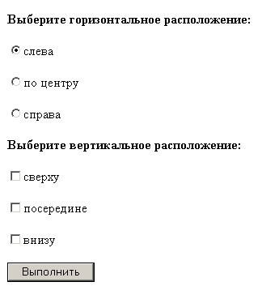
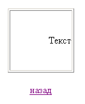
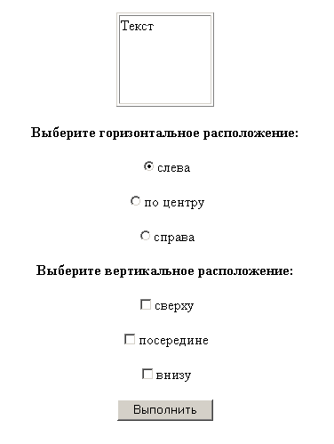
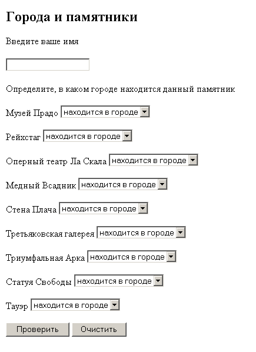
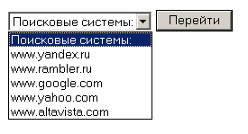

Создайте файл z4-1a.htm с HTML-формой, позволяющей выбрать
а) горизонтальное (align, варианты значений: left, center, right),
б) вертикальное (valign, варианты значений: top, middle, bottom)
расположение текста в таблице.
Для (а) использовать радиокнопки, для (б) - флажки.
Обработка формы выполняется в скрипте z4-1b.php по нажатии кнопки "Выполнить".

В скрипте z4-1b.php сформировать таблицу, состоящую из одной ячейки шириной и высотой 100 пикселов, атрибуты ячейки align и valign должны получить значения, переданные из формы. В ячейку таблицы поместить слово "Текст". Под таблицей вставить гиперссылку на файл z4-1a.htm ("Назад").

(Использовать листинги 10-1 и 10-2).
На основе предыдущего задания создайте файл z4-2.php с HTML-формой, которая вызывает сама себя. По умолчанию установите такие значения: для align - "left", для valign - "top".

(Использовать листинг 10-8).
Создайте файл z4-3a.htm с HTML-формой "Гoрoдa и памятники" для тестирования знаний. В этой форме нужно ввести имя тестируемого, а затем для каждого памятника выбрать, в каком городе он находится. Выбор городов - раскрывающийся список. Список вопросов и ответов - в файле vopr.txt.

Обработка формы выполняется в скрипте z4-3b.php, в котором необходимо создать массив $otv с номерами правильных ответов (см. файл vopr.txt) и сделать вывод на экран имени тестируемого и оценки его знаний в зависимости от количества правильных ответов (см. файл vopr.txt, использовать оператор switch).
(Использовать листинги 10-3 и 10-4).
Листинг 10-3 последовательно сохранить как z4-45.php, z4-46.php, z4-47.php для того, чтобы выполнились листинги 10-5, 10-6 и 10-7 (ls10-5.php, ls10-6.php и ls10-7.php).
На основе листинга 10-9 создайте скрипт z4-5.php в котором сперва проверяется, было ли присвоено значение переменной $site. Если проверка дает положительный результат, осуществляется перенаправление пользователя на сайт поисковой системы, адрес которого - значение переменной $site. Если же значение переменной $site не задано, выводится HTML-форма с раскрывющимся списком поисковых сайтов:

Эти сайты должны быть занесены в массив $list_sites[]. Предполагается, что данный массив может дополняться, а значит его размер заранее неизвестен, поэтому раскрывающийся список с адресами поисковых систем сформировать с помощью цикла while и функции, возвращающей количество элементов массива.